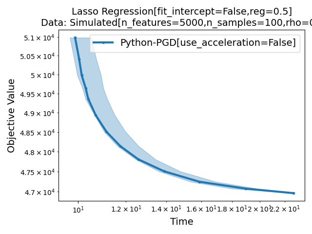
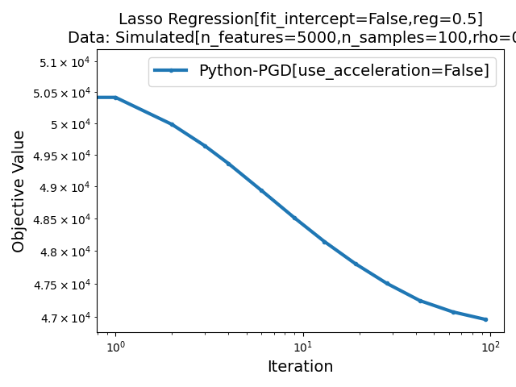
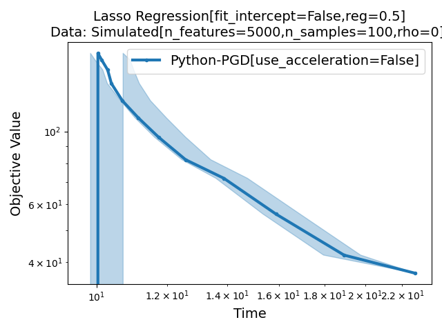
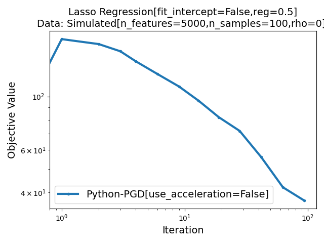
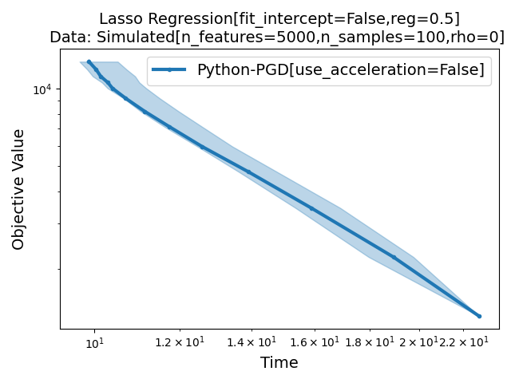
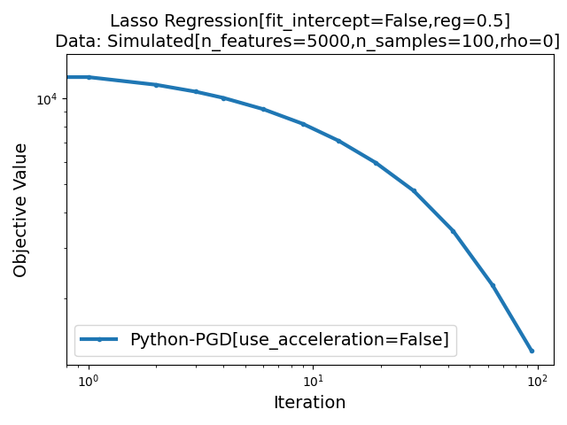
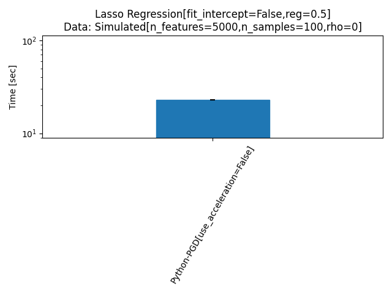
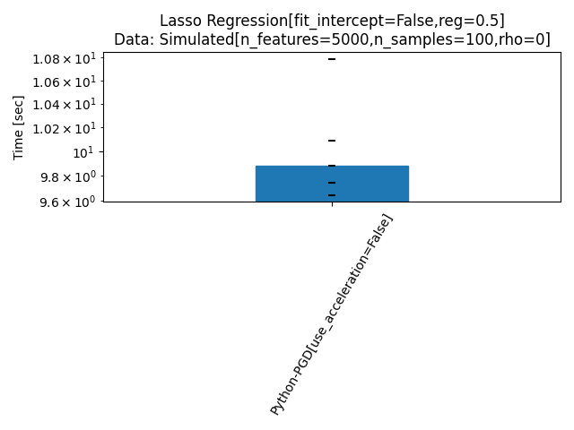

Note
Go to the end to download the full example code.
Demo benchmark with R/Python#
- 
- 
- 
- 
- 
- 
- 
- 
![Lasso Regression[fit_intercept=False,reg=0.5] Data: Simulated[n_features=5000,n_samples=100,rho=0]](../_images/sphx_glr_plot_run_benchmark_python_R_009.png)
Simulated[n_features=5000,n_samples=100,rho=0]
|--Lasso Regression[fit_intercept=False,reg=0.5]
|--Python-PGD[use_acceleration=False]: done (timeout)
Traceback (most recent call last):
File "/home/circleci/project/benchmarks/benchmark_lasso/solvers/r_pgd.py", line 9, in <module>
from rpy2 import robjects
ModuleNotFoundError: No module named 'rpy2'
|--R-PGD: not installed
Saving result in: /home/circleci/project/benchmarks/benchmark_lasso/outputs/benchopt_run_2025-10-17_09h50m54.parquet
Save objective_curve plot of objective_value for Simulated[n_features=5000,n_samples=100,rho=0] and Lasso Regression[fit_intercept=False,reg=0.5] as: /home/circleci/project/benchmarks/benchmark_lasso/outputs/b899eeb3cb7c332375e75369220a9e3c_objective_value_objective_curve.pdf
Save objective_curve plot of objective_support_size for Simulated[n_features=5000,n_samples=100,rho=0] and Lasso Regression[fit_intercept=False,reg=0.5] as: /home/circleci/project/benchmarks/benchmark_lasso/outputs/b899eeb3cb7c332375e75369220a9e3c_objective_support_size_objective_curve.pdf
Save objective_curve plot of objective_duality_gap for Simulated[n_features=5000,n_samples=100,rho=0] and Lasso Regression[fit_intercept=False,reg=0.5] as: /home/circleci/project/benchmarks/benchmark_lasso/outputs/b899eeb3cb7c332375e75369220a9e3c_objective_duality_gap_objective_curve.pdf
Save suboptimality_curve plot of objective_value for Simulated[n_features=5000,n_samples=100,rho=0] and Lasso Regression[fit_intercept=False,reg=0.5] as: /home/circleci/project/benchmarks/benchmark_lasso/outputs/b899eeb3cb7c332375e75369220a9e3c_objective_value_suboptimality_curve.pdf
Save relative_suboptimality_curve plot of objective_value for Simulated[n_features=5000,n_samples=100,rho=0] and Lasso Regression[fit_intercept=False,reg=0.5] as: /home/circleci/project/benchmarks/benchmark_lasso/outputs/b899eeb3cb7c332375e75369220a9e3c_objective_value_relative_suboptimality_curve.pdf
Save bar_chart plot of objective_value for Simulated[n_features=5000,n_samples=100,rho=0] and Lasso Regression[fit_intercept=False,reg=0.5] as: /home/circleci/project/benchmarks/benchmark_lasso/outputs/b899eeb3cb7c332375e75369220a9e3c_objective_value_bar_chart.pdf
Save boxplot plot of objective_value for Simulated[n_features=5000,n_samples=100,rho=0] and Lasso Regression[fit_intercept=False,reg=0.5] as: /home/circleci/project/benchmarks/benchmark_lasso/outputs/b899eeb3cb7c332375e75369220a9e3c_objective_value_boxplot.pdf
Save boxplot plot of objective_support_size for Simulated[n_features=5000,n_samples=100,rho=0] and Lasso Regression[fit_intercept=False,reg=0.5] as: /home/circleci/project/benchmarks/benchmark_lasso/outputs/b899eeb3cb7c332375e75369220a9e3c_objective_support_size_boxplot.pdf
Save boxplot plot of objective_duality_gap for Simulated[n_features=5000,n_samples=100,rho=0] and Lasso Regression[fit_intercept=False,reg=0.5] as: /home/circleci/project/benchmarks/benchmark_lasso/outputs/b899eeb3cb7c332375e75369220a9e3c_objective_duality_gap_boxplot.pdf
from pathlib import Path
import matplotlib.pyplot as plt
from benchopt import run_benchmark
from benchopt.benchmark import Benchmark
from benchopt.plotting import plot_benchmark, PLOT_KINDS
from benchopt.plotting.plot_objective_curve import reset_solver_styles_idx
BENCHMARK_PATH = Path().resolve().parent / 'benchmarks' / 'benchmark_lasso'
if not BENCHMARK_PATH.exists():
raise RuntimeError(
"This example can only work when Lasso benchmark is cloned in the "
"example folder. Please run:\n"
"$ git clone https://github.com/benchopt/benchmark_lasso "
f"{BENCHMARK_PATH.resolve()}"
)
_, save_file = run_benchmark(
BENCHMARK_PATH,
solver_names=['Python-PGD[use_acceleration=False]', 'R-PGD'],
dataset_names=["Simulated[n_features=5000,n_samples=100,rho=0]"],
objective_filters=['*[fit_intercept=False,reg=0.5]'],
max_runs=100, timeout=100, n_repetitions=5,
plot_result=False, show_progress=False
)
kinds = list(PLOT_KINDS.keys())
reset_solver_styles_idx()
figs = plot_benchmark(
save_file, benchmark=Benchmark(BENCHMARK_PATH), kinds=kinds, html=False
)
plt.show()
Total running time of the script: (1 minutes 49.483 seconds)